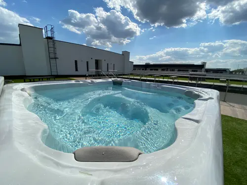

#110Huzd a kepet a sorrend modositasahozdandelion-royal-homes-source-022.webproyal_homes-022
betöltés…ismeretlen
SEO draft
approved: false
altHu: Tetőteraszos jakuzzi a Dandelion Royal Homes közös pihenőterén
titleHu: Tetőteraszos jakuzzi a Royal Homesnál
captionHu: A képen a Dandelion Royal Homes tetőteraszán elhelyezett jakuzzi látható.
altEn: Rooftop hot tub in the shared relaxation area of Dandelion Royal Homes
titleEn: Rooftop hot tub at Royal Homes
captionEn: The image shows the hot tub on the rooftop terrace of Dandelion Royal Homes.